Zapomeňte na anonymní vakuové balíčky z neznámých porážek a mrazírny vzdálené stovky kilometrů. V supermarketu Fresh spolupracujeme výhradně s prověřenými chovateli ze Zlínska a Slovácka. Každý kus masa má jméno farmy, způsob chovu a datum porážky. Každodenní závoz zajišťuje, že na pult přichází jen opravdu čerstvé.
Vyberte si ze čtyř kategorií – čerstvé maso, řemeslné uzeniny, drůbež a marinády. Vše krájíme a připravujeme přímo za pultem na objednávku.
Náš bestseller
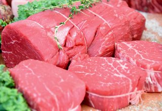
Hovězí roastbeef z nízké roštěné
Šťavnatá nízká roštěná z volně chovaného skotu farmy Bílé Karpaty, ideální na grilování i pečení vcelku. Prorostlá tučnými žilkami pro maximální chuť.
Cena: od 349 Kč/kgBez alergenů
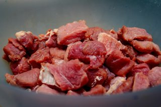
Hovězí maso na guláš
Nakrájená kližka nebo plec z českého skotu – tučnější kusy vhodné pro pomalé vaření, dušení a poctivý guláš, který se vaří alespoň tři hodiny.
Cena: od 229 Kč/kgBez alergenů
Pomalý chov
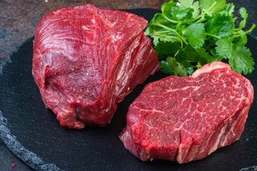
Hovězí svíčková na plátky
Nejjemnější část hovězího, vyzrálá čtyři dny při kontrolované teplotě. Krájíme na plátky přímo před vámi – perfektní pro smetanovou svíčkovou nebo tatarský biftek.
Cena: od 499 Kč/kgBez alergenů
Tradičně uzené
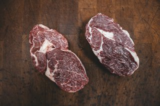
Vepřová krkovice s kostí
Prorostlá krkovice z prasat volného výběhu. Šťavnatá i po grilování, ideální na záhon nebo do výpeku. Krájíme na místě dle přání zákazníka.
Cena: od 169 Kč/kgBez alergenů
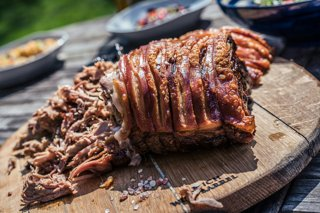
Vepřová pečeně bez kosti
Horní šál z domácího prasete, vázaný provázkem do pravidelného válce. Skvělá pro nedělní pečeni v troubě i pomalý hrnec. Bez zbytečného tuku.
Cena: od 189 Kč/kgBez alergenů
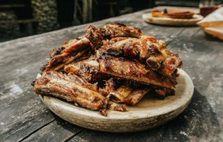
Vepřová žebra na grilování
Celá hřbetní žebra přirozeně prorostlá tukem, ideální na pomalý gril nebo do pece při nízké teplotě. Maso se samo odlupuje od kosti.
Cena: od 139 Kč/kgBez alergenů
Volný výběh
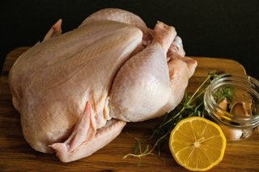
Celé kuře z volného výběhu
Kuře z moravské drůbežárny s venkovním výběhem, krmené bez antibiotiků a urychlovačů růstu. Pevnější maso s výraznou chutí, žlutá kůže typická pro přirozený chov.
Cena: od 219 Kč/ksBez alergenů
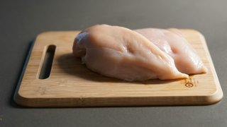
Kuřecí prsa bez kůže
Vykostěná kuřecí prsa z volného výběhu, krájená dle objednávky. Vynikají nízkým obsahem tuku a čistou chutí vhodnou pro zdravý životní styl.
Cena: od 249 Kč/kgBez alergenů
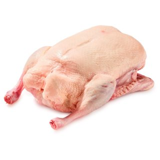
Kachna celá na pečení
Pražská kachna z farmy Slavičín, chovaná přirozeně s přístupem na vodní plochu. Charakteristicky tučná kůže, která se v troubě promění v dokonalé škvarky.
Cena: od 289 Kč/ksBez alergenů
Řemeslné uzení
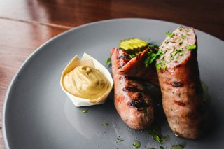
Zlínská klobása uzenářská
Ručně plněná klobása z vepřového masa s česnekem a majoránkou, uzená studeným bukovým dýmem po dobu osmi hodin. Bez dusitanů a stabilizátorů.
Cena: od 189 Kč/kgBez alergenů
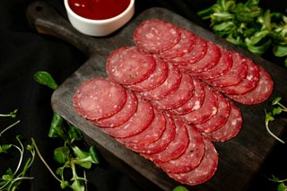
Domácí salám moravský
Tradiční vepřový salám s celými kousky masa viditelného pouhým okem. Bez mechanicky separovaného masa, škrobu a lepidel. Krájíme na místě dle tloušťky.
Cena: od 159 Kč/kgBez alergenů
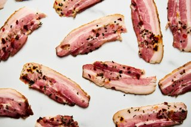
Prorostlá uzená slanina
Bůček sušený nasucho solí a kořením po dobu tří dnů, poté uzený v domácí udírně bukovými třískami. Ideální na zapékání, do polévek i na přímou konzumaci.
Cena: od 199 Kč/kgBez alergenů
Proč nakupovat u nás?
Náš pult řeznictví není jen regál s výrobky. Je to každodenní práce zkušeného řezníka, který zná každý kus masa jménem.
Dohledatelný původ
Každý kus masa nese informaci o farmě, plemeni a datu porážky. Žádná anonymita, žádné skryté závozy ze zahraničí.
Každodenní čerstvost
Závoz probíhá každý pracovní den ráno. Na pult se dostane jen maso, které je skutečně čerstvé – přebytky z předchozího dne neskladujeme.
Řezník za pultem
Nekupujete anonymní vakuový obal. Zkušený řezník poradí s výběrem, nakrájí dle přání a doporučí správnou přípravu každého kusu.
Bez zbytečných přísad
Naše uzeniny vznikají bez dusitanů tam, kde to technologie dovoluje, bez škrobových plnidel a mechanicky separovaného masa. Čteme složení za vás.
Naši lokální chovatelé
Každý kus masa má u nás jméno a adresu. Nezajímá nás, kde je nejlevněji – zajímá nás, kde chovají nejlépe.
Farma Bílé Karpaty – Bojkovice
Rodinný chov masného skotu v kopcích Bílých Karpat s pastvinou po celé léto. Plemena Aberdeen Angus a Charolais zajišťují charakteristicky mramorované hovězí s bohatou chutí a přirozenou tučností.
Statek Juráček – Slavičín
Třígenerační rodinný chov prasat ve venkovním výběhu nedaleko Slavičína. Prasata krmí kukuřicí, ječmenem a syrovátkou z okolní mlékárny – žádné krmné přísady ani preventivní antibiotika.
Drůbežárna Holešov – volný výběh
Specializovaný chov kuřat a kachen s certifikovaným volným výběhem. Ptáci mají trvalý přístup ven, dobu porážky 80+ dní pro kuřata (oproti industriálním 35 dnům) a přirozené krmení bez urychlovačů.
Uzenářství Novák – Uherský Brod
Rodinné uzenářství s padesátiletou tradicí zpracovávající výhradně maso od lokálních chovatelů. Uzení probíhá v historické bučinové udírně, receptury se předávají z generace na generaci beze změny.